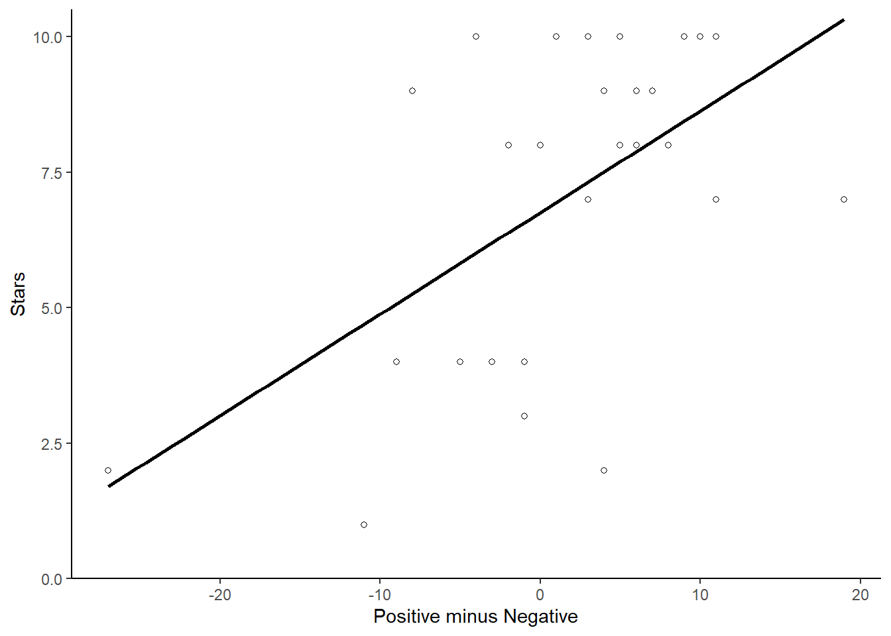
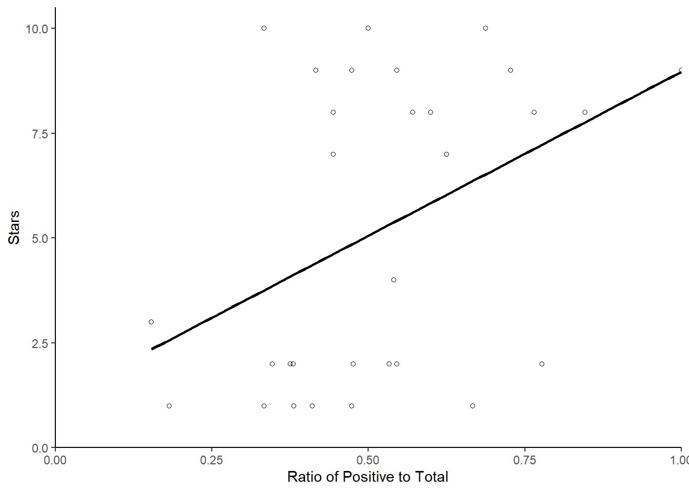
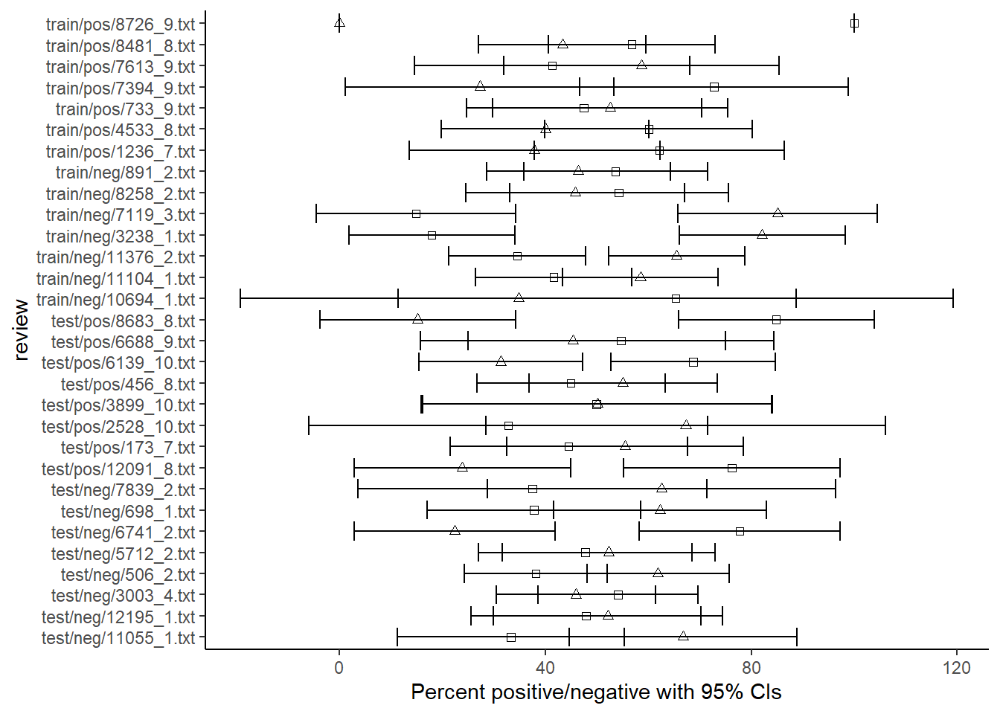
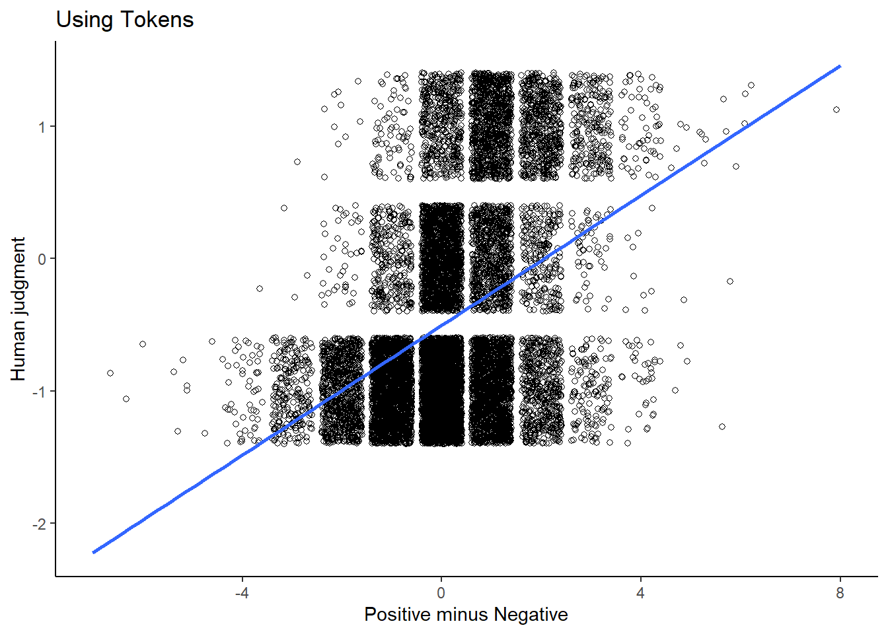
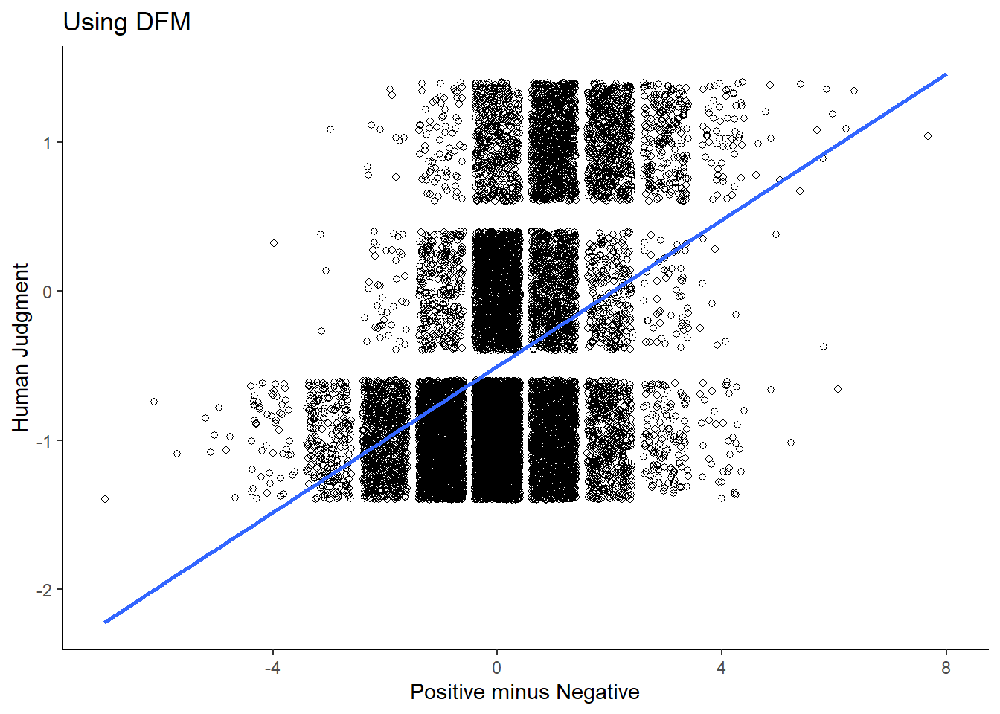

7.2 Sentiment Analysis
The logic of dictionaries is that we can use them to see which kind of topics are present in our documents. Yet, we can also use them to provide us with measurements that are most often related to scaling. One way to do so is with sentiment analysis. Here, we look at whether a certain piece of text is happy, angry, positive, negative, and so on. One case in which this can help us is with movie reviews. These reviews give us a description of a movie and then tell us their opinion. Another is when we look at Twitter data, to capture the ‘mood of the moment’. Here, we will look at both, starting with the movie reviews.
7.2.1 Movie Reviews
First, we load some reviews into R. The corpus we use here contains 50,000 movie reviews, each with a 1-10 rating (amongst others). As 50,000 reviews make the analysis quite slow, we will first select 30 reviews at random from this corpus. We do so via corpus_sample, after which we transform it via a tokens object into a dfm:
library(quanteda.classifiers)
reviews <- corpus_sample(data_corpus_LMRD, 30)
reviews_tokens <- tokens(reviews)
reviews_dfm <- dfm(reviews_tokens)The next step is to load in a sentiment analysis dictionary. Here, we will use the Lexicoder Sentiment Dictionary, included in quanteda and run it on the dfm:
The next step is to convert the results to a data frame and view them:
## doc_id negative positive neg_positive neg_negative
## 1 test/pos/6139_10.txt 10 22 0 0
## 2 test/pos/12091_8.txt 4 13 0 0
## 3 train/neg/11104_1.txt 23 16 0 0
## 4 train/neg/10694_1.txt 1 2 0 0
## 5 train/pos/4533_8.txt 10 15 0 0
## 6 train/neg/8258_2.txt 10 12 0 0Since movie reviews usually come with some sort of rating (often in the form of stars), we can see if this relates to the sentiment of the review. To do so, we have to take the rating out of the dfm and place it in a new data frame with the positive and negative sentiments:
star_data <- reviews_dfm@docvars$rating
stargraph <- as.data.frame(cbind(star_data, sentiment$negative, sentiment$positive))
names(stargraph) <- c("stars","negative","positive")To compare the sentiment with the stars, we first have to combine the senitments into a scale. Of the many ways to do so, the simplest is to take the difference between the positive and negative words (positive – negative). Another option is to take the ratio of positive words against both positive and negative (positive/positive+negative). Here, we do both:
sentiment_difference <- stargraph$positive-stargraph$negative
sentiment_ratio <- (stargraph$positive/ (stargraph$positive + stargraph$negative))
stargraph <- cbind(stargraph, sentiment_difference,sentiment_ratio)Then, we can plot the ratings and the scaled sentiment measures together with a linear regression line:
library(ggplot2)
ggplot(stargraph,aes(x = sentiment_difference, y = stars)) +
geom_point(shape = 1) +
geom_smooth(method = lm, se = FALSE, color="black") +
scale_y_continuous(limits = c(0, 10.5), expand = c(0,0))+
xlab("Positive minus Negative") +
ylab("Stars") +
theme_classic()## `geom_smooth()` using formula = 'y ~ x'## Warning: Removed 3 rows containing missing values or values outside the scale range
## (`geom_smooth()`).
ggplot(stargraph,aes(x = sentiment_ratio, y = stars)) +
geom_point(shape = 1) +
geom_smooth(method = lm, se = FALSE, color="black") +
scale_y_continuous(limits = c(0, 10.5), expand = c(0,0))+
scale_x_continuous(limits = c(0, 1), expand = c(0,0))+
xlab("Ratio of Positive to Total") +
ylab("Stars") +
theme_classic()## `geom_smooth()` using formula = 'y ~ x'
Finally, let us look at how we can make any more inferences, by estimating confidence intervals around the point estimates. For this, we again add a column, this time one with the total of positive and negative words as scored by the dictionary. We do so by copying the data frame to a new data frame and adding a new column filled with NA values:
We then again specify the number of reviews, the replications that we want and change the data frame into an array:
library(combinat)
nman <- nrow(reviews_bootstrap)
nrepl <- 1000
manifBSn <- manifBSnRand <- array(as.matrix(reviews_bootstrap[,2:3]),
c(nman, 2, nrepl + 1),
dimnames = list(1:nman,names(reviews_bootstrap[,2:3]),
0:nrepl))Then, we bootstrap the word counts for each movie review and compute percentages for each category using a multinomial draw:
n <- apply(manifBSn[1:nrow(manifBSn), , 1], 1, sum)
p <- manifBSn[, , 1]/n
for(i in 1:nrepl) {
manifBSn[, , i] <- rmultinomial(n, p)
}We can then ask R to compute the quantities of interest. These are standard errors for each category, as well as the percentage coded for each category (Mikhaylov et al., 2012):
NegativeSE <- apply(manifBSn[, "negative", ]/n * 100, 1, sd)
PositiveSE <- apply(manifBSn[, "positive", ]/n * 100, 1, sd)
perNegative <- apply(manifBSn[, "negative", ]/n * 100, 1, mean)
perPositive <- apply(manifBSn[, "positive", ]/n * 100, 1, mean)We then save these quantities of interest in a new data frame:
dataBS <- data.frame(cbind(reviews_bootstrap[, 1:3], NegativeSE,PositiveSE, perNegative, perPositive))Then, we first calculate the confidence intervals and add these:
pos_hi <- dataBS$perPositive + (1.96 * dataBS$PositiveSE)
pos_lo <- dataBS$perPositive - (1.96 * dataBS$PositiveSE)
neg_lo <- dataBS$perNegative - (1.96 * dataBS$NegativeSE)
neg_hi <- dataBS$perNegative + (1.96 * dataBS$NegativeSE)
dataBS <- cbind(dataBS, pos_hi, pos_lo, neg_lo, neg_hi)Finally, we can then make the graph. Here, we plot each of the positive and negative points and then overlay them with their error bars:
library(ggplot2)
ggplot() +
geom_point(data = dataBS,aes(x = perPositive, y = doc_id), shape = 0) +
geom_point(data = dataBS,aes(x = perNegative, y = doc_id), shape = 2) +
geom_errorbarh(data = dataBS,aes(x = perPositive, xmax = pos_hi,xmin = pos_lo, y = doc_id)) +
geom_errorbarh(data = dataBS,aes(x = perNegative, xmax = neg_hi,xmin = neg_lo, y = doc_id)) +
xlab("Percent positive/negative with 95% CIs") +
ylab("review")+
theme_classic()## Warning in geom_errorbarh(data = dataBS, aes(x = perPositive, xmax = pos_hi, :
## Ignoring unknown aesthetics: x## Warning in geom_errorbarh(data = dataBS, aes(x = perNegative, xmax = neg_hi, :
## Ignoring unknown aesthetics: x
As we can see in this particular example, the fact that some documents are shorter than others introduces a lot of uncertainty in the estimates. As evident from the overlapping confidence intervals, for most reviews, the percentage of negative words is not very different from the percentage of positive words. In other words: the sentiment for these reviews is rather mixed.
7.2.2 Twitter
Now, let us turn to an example using Twitter data. Here, we will look at the major problems that have occurred to several of the major US airlines. For this, researchers scraped data from Twitter between 16 and 24 February of 2015. Then, using the Crowdflower platform, they asked contributors to classify each tweet (their sentiment) as either negative, positive, or neutral, and, if negative, what their reason was for classifying it as such. Besides this, the data also contains information on how ‘confident’ coders were about their classification and reason, some information on the Airline, and some info on the Tweet. Finally, we get some information on the “gold” tweets, which Crowdflower uses to figure out how well their coders are doing.
While we can download the data from the website (https://www.kaggle.com/crowdflower/twitter-airline-sentiment), for ease-of-use, we also placed it on GitHub:
urlfile = "https://raw.githubusercontent.com/SCJBruinsma/qta-files/master/Tweets.csv"
tweets <- read.csv(url(urlfile))Given that this is Twitter data, we have to do quite some cleaning to filter out everything we do not want. While we earlier saw that we can perform cleaning on a corpus, we can also clean our text while still in a data frame. We can do this with R’s in-house gsub command, which can replace any part of a string. To understand how this works, say that we want to remove all the mentions of websites from our tweets. We then do as such:
Thus, we substitute those strings that start with http.* (the asterisk denotes a wildcard, which means that anything can follow) and replace it with (that is, nothing). We do this for any string that is in tweets$text. Using this technique, we also remove slashes, punctuation, various symbols, RT (retweets), and references (href):
tweets$text <- gsub("https.*","", tweets$text)
tweets$text <- gsub("\\$", "", tweets$text)
tweets$text <- gsub("@\\w+", "", tweets$text)
tweets$text <- gsub("[[:punct:]]", "", tweets$text)
tweets$text <- gsub("[ |\t]{2,}", "", tweets$text)
tweets$text <- gsub("^ ", "", tweets$text)
tweets$text <- gsub(" $", "", tweets$text)
tweets$text <- gsub("RT", "", tweets$text)
tweets$text <- gsub("href", "", tweets$text)We then transform our dataframe into a corpus (specifying that our text is in the tweets$text field), transform this into a tokens object, lower all the words, remove the stop words, and finally make it into a dfm:
corpus_tweets <- corpus(tweets, text_field = "text")
data_tweets_tokens <- tokens(corpus_tweets)
data_tweets_tokens <- tokens_tolower(data_tweets_tokens, keep_acronyms = TRUE)
data_tweets_tokens <- tokens_select(data_tweets_tokens, stopwords("english"), selection = "remove")
data_tweets_dfm <- dfm(data_tweets_tokens)Now we can apply our dictionary. We can do this in two ways: applying it to the dfm, or applying it to the tokens object. Both should give roughly similar results. Yet, given that dfm_lookup() cannot detect multi-word expressions (as the dfm gets rid of all word order), we can use the tokens_lookup() and then convert this into a dfm, to compensate for this. One reason to do this here is that the LSD2015 dictionary contains some multi-word expressions that dfm_lookup() might miss. As a comparison, let us have a look at both:
results_tokens <- tokens_lookup(data_tweets_tokens, data_dictionary_LSD2015)
results_tokens <- dfm(results_tokens)
results_tokens <- convert(results_tokens, to="data.frame")
results_dfm <- dfm_lookup(data_tweets_dfm, data_dictionary_LSD2015)
results_dfm <- convert(results_dfm, to="data.frame")Now let us see how well our dictionary has done. To see this, we compare the sentiment of the tweet according to the dictionary with the sentiment assigned by the coder. We take this information out of our original data, and recode it (so it has got numerical values):
library(car)
labels <- tweets$airline_sentiment
labels <- car::recode(labels, "'positive'=1;'negative'=-1;'neutral'=0")
table(labels)A quick look at the data (with table()) reveals that the majority of the tweets are negative, a fair share neutral, and finally some positive ones. Now, let us bind this data to the output of our dictionary analysis, and calculate an overall score for each tweet. We do this by subtracting the positive score from the negative score (that is, the higher the score, the more positive the tweet):
comparison_tokens <- as.data.frame(cbind(results_tokens$positive, results_tokens$negative, labels))
difference_tokens <- results_tokens$positive - results_tokens$negative
comparison_tokens <- cbind(comparison_tokens, difference_tokens)
comparison_dfm <- as.data.frame(cbind(results_dfm$positive, results_dfm$negative, labels))
difference_dfm <- results_dfm$positive - results_dfm$negative
comparison_dfm <- cbind(comparison_dfm, difference_dfm)Finally, we can place this all in a graph, in which we plot both the human judgement scores and the scores we calculated by subtracting the positive and negative codes. Also, we plot a simple linear equation to better understand the relation:
library(ggplot2)
ggplot(comparison_tokens ,aes(x = difference_tokens, y = labels)) +
geom_jitter(shape = 1) +
geom_smooth(method = lm, se = FALSE) +
xlab("Positive minus Negative") +
ylab("Human judgment") +
ggtitle("Using Tokens")+
theme_classic()
ggplot(comparison_dfm, aes(x = difference_dfm, y = labels)) +
geom_jitter(shape = 1) +
geom_smooth(method = lm, se = FALSE) +
xlab("Positive minus Negative") +
ylab("Human Judgment") +
ggtitle("Using DFM")+
theme_classic()
As we can see, there is a positive relation (0.6947 for the tokens and 0.6914 for the dfm), which is quite good considering our approach does not involve any human coders at all.